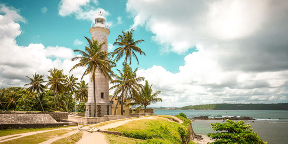

4. Galle Light House |
|  |
Galle Lighthouse or Pointe de Galle Light is the oldest lighthouse in Galle. The lighthouse was established in 1848 and stands tall today at 26.5 meters at the shore of Galle.The bright white lighthouse with the background of the blue skies, turquoise blue and green ocean, the golden sand of the shore, and the lush green paddy fields makes for a very picturesque view. The same view also makes visiting this lighthouse one of the best activities to do in Galle. |
Distance from Katunayaka Airport : 150 km and it takes about 2 to 2 ½ hours |